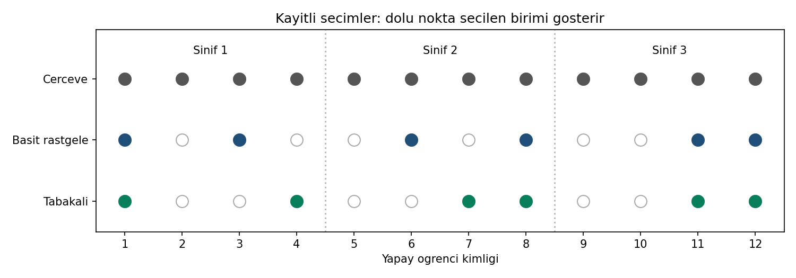

06 / ÖRNEKLEME YÖNTEMLERİ
Aynı çerçeve, iki seçim yolu.
12 yapay birim · Üç sınıf · İki ayrı altılı örneklem
Kim seçildi, nasıl seçildi?
Üç sınıfta dörder birim var. Basit rastgele seçim 12 birimden altısını; tabakalı seçim her sınıftan ikisini alır. Sayfada yeni seçim yapılmaz; üç yazılım aynı kayıtlı CSV’yi okur.

| Yöntem | Seçilen kimlikler | Gerçek n | π | Ağırlık | Ağırlık toplamı |
|---|---|---|---|---|---|
| Basit rastgele | 1 / 3 / 6 / 8 / 11 / 12 | 6 | 0,50 | 2 | 12 |
| Tabakalı | 1 / 4 / 7 / 8 / 11 / 12 | 6 | 0,50 | 2 | 12 |
Basit örneklemde sınıfların 2/2/2 dağılması yalnız bu çekimin sonucudur. Tabakalı tasarımda ise sınıf başına iki seçim önceden belirlenmiştir. Ağırlık toplamı 12 olsa da seçilmiş birim sayısı altıdır.
Uygula ve karşılaştır
Öğretim ZIP’i · 12 yapay birim395 kayıtlı uygulamaya geç →
ZIP’i tamamen ayıklayın; b06/ornek-01 klasöründe:
py cozum.py --checkBeklenen: 29 kontrol değeri eşleşiyor. NumPy ve pandas gerekir; üretici kurulum yapmaz. R/SPSS için paket rehberini izleyin. Mevcut grafiği korumak için --grafik eklemeyin; uret.py ve secim.R ile yeni seçim üretmeyin.
Doğrulama ve yorum sınırı
Kullanıcı Python ve R’de 29 değeri otomatik karşılaştırdı; R seçim haritası görüntülendi. SPSS’te paylaşılan kimlik, frekans, olasılık ve ağırlık tabloları eşleşti. SPSS’te 29 otomatik kontrol veya tam SPV incelemesi yapıldığı iddia edilmez.
Kimlikler bir sonuç değişkeni değildir. Bu harita yöntemleri öğretir; tabakalı seçimin her durumda daha iyi tahmin verdiğini veya nedensel bir etkiyi kanıtlamaz.